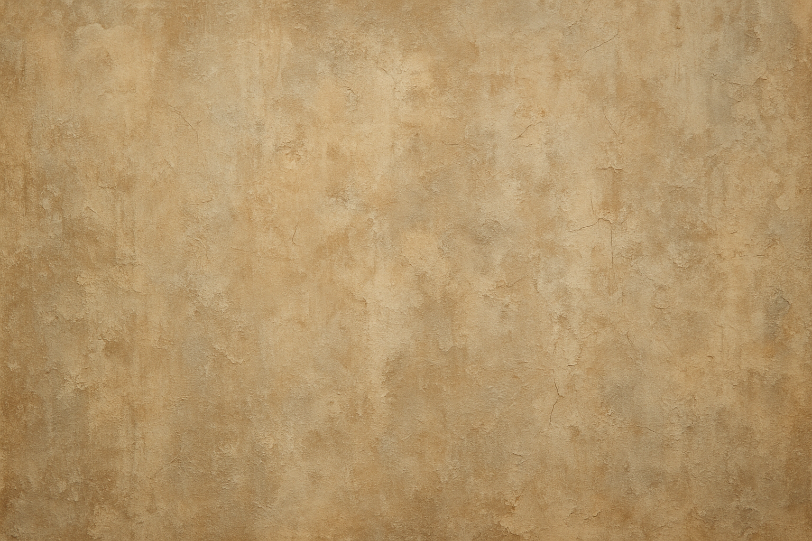

Tudo sobre Texturas de Parede
Transforme suas paredes com texturas incríveis! Descubra como aplicar, quais materiais usar e os tipos mais populares para o seu projeto.
Materiais Necessários
Massa para Textura
Produto específico que dá base para a textura. Pode ser à base de massa corrida ou massa acrílica.
Espátulas e Desempenadeiras
Essenciais para aplicar e espalhar a massa na parede de maneira uniforme.
Rolo para Textura
Usado para criar diferentes desenhos e padrões na massa ainda fresca.
Lixa e Pano
Para o acabamento, removendo imperfeições e limpando a superfície.
Passo a Passo: Como Aplicar Textura
Prepare a Superfície
Limpe a parede, removendo poeira e resíduos. Corrija grandes imperfeições e aplique uma demão de selador acrílico. Cubra rodapés e móveis para evitar sujeira.
Aplique a Massa
Com uma desempenadeira ou espátula, aplique uma camada fina e uniforme da massa para textura na parede, cobrindo uma área pequena por vez.
Crie a Textura
Imediatamente após a aplicação da massa, use o rolo ou a espátula para criar o efeito desejado, como arranhado (grafiato), chapiscado ou espatulado. Mantenha a consistência para um visual uniforme.
Finalização
Aguarde a secagem completa da textura, conforme o tempo indicado na embalagem do produto. Depois, pinte a superfície com a tinta da sua escolha para selar e proteger o acabamento.
Tipos Comuns de Texturas
Grafiato
O grafiato é um clássico que cria um efeito rústico e com ranhuras na superfície. É extremamente popular para áreas externas devido à sua resistência e durabilidade. As ranhuras são criadas ao "arranhar" a massa com uma desempenadeira de plástico ou com dentes.
Espatulado
Esta textura apresenta uma superfície lisa e brilhante, com ondulações sutis criadas pela espátula. Confere um toque de sofisticação e modernidade a ambientes internos, sendo uma ótima opção para salas e quartos.
Rústica
Ideal para quem busca um visual mais natural, a textura rústica imita a aparência de pedras ou tijolos. Sua superfície porosa esconde imperfeições e é perfeita para fachadas e áreas de lazer.
Pátina
O efeito de pátina deixa a parede com um aspecto antigo e envelhecido, com riscos e desbotamentos controlados. É muito utilizada em móveis de madeira, mas também pode ser aplicada em paredes para um visual vintage e charmoso.
Marmorato
Para um visual sofisticado e elegante, o marmorato simula a aparência do mármore com veios e manchas. Requer uma técnica de aplicação mais apurada para criar o efeito realista das pedras naturais.
Chapiscado
Uma alternativa econômica que cria um visual rústico com pequenas projeções na superfície, ideal para muros. É um processo rápido e eficaz para esconder imperfeições e dar um novo visual à parede.